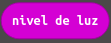
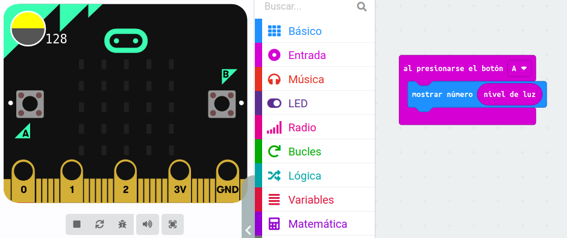
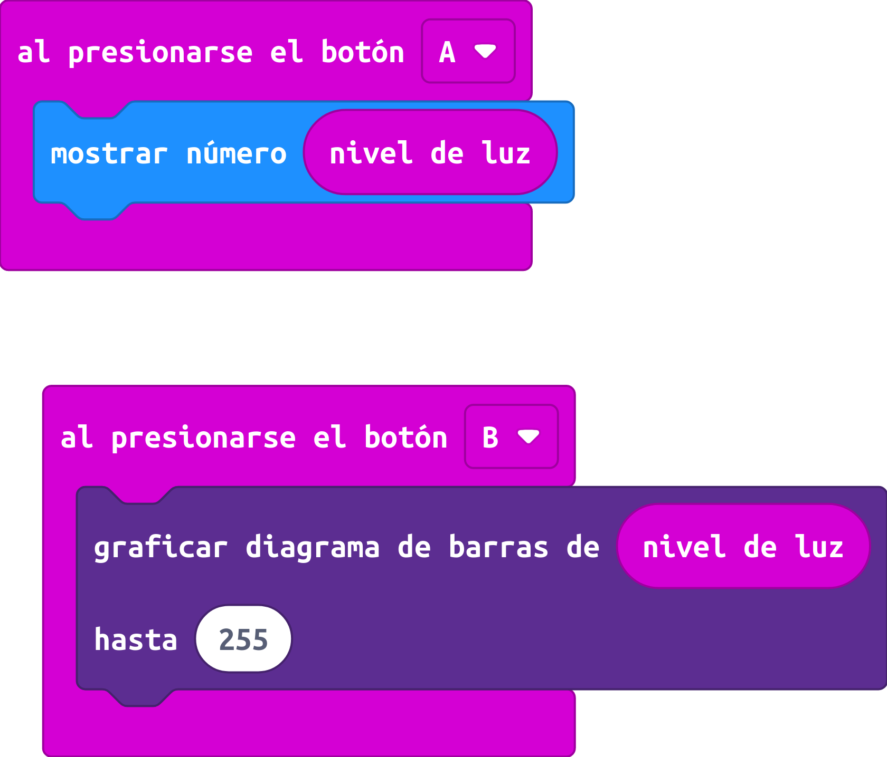
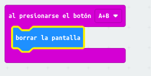

Como hemos visto anteriormente, los LEDs de la placa micro:bit se pueden usar como salida para mostrar texto e iconos. En este apartado veremos que también podemos utilizarlos como entrada, haciendo que detecten la luz ambiente.
De forma similar a la temperatura, podemos acceder a una variable para ver el valor del sensor de luminosidad. En este caso, usaremos la variable nivel de luz:

Podemos mostrar directamente el nivel de luz con el siguiente código:

Si queremos mostrar el resultado de forma gráfica usando la instrucción de graficar diagrama de barras mediante el siguiente código:

Podemos completar el programa anterior borrando la pantalla cuando se pulsen a la vez los botones A y B:
